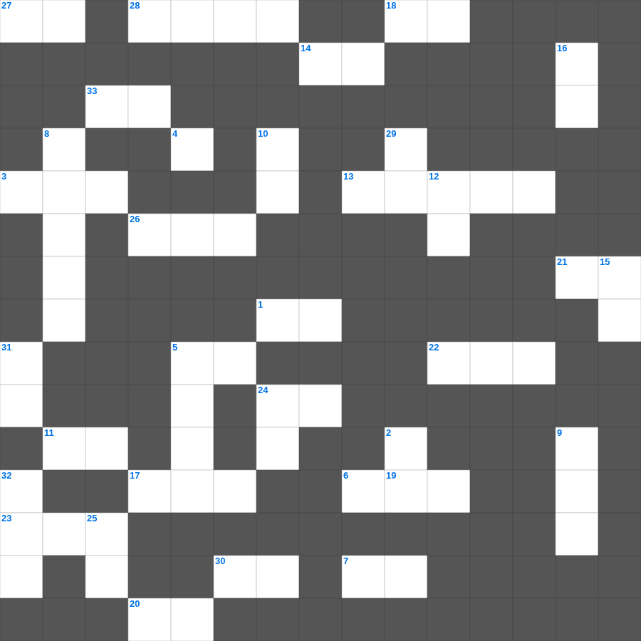

다니엘 마스터 100 (1/2)
📌 서비스 정의
십자가로세로는 교회 주보와 주일학교에서 사용할 수 있는 성경 기반 가로세로 퍼즐 서비스입니다. 성경 인물, 사건, 핵심 구절을 바탕으로 제작되었습니다. 온라인 풀이 및 인쇄 기능을 제공합니다.
📖 다니엘란?
다니엘은 바벨론 포로로 끌려간 다니엘과 친구들이 이방 왕궁에서 신앙을 지킨 이야기와, 미래에 대한 예언적 환상을 담고 있습니다.
📚 다니엘의 주요 사건·주제
다니엘과 세 친구의 신앙 결단 · 느부갓네살의 꿈 해석 · 풀무불 속의 세 친구 · 사자굴 속의 다니엘 · 일흔 이레와 종말 환상
다니엘의 말씀을 퀴즈로 배우는 다니엘 말씀 퀴즈입니다. 가로 힌트와 세로 힌트를 보고 35개의 단어를 맞춰보세요. 인쇄도 가능하고 정답 확인도 바로 되니 소그룹 모임이나 가정 예배 시간에도 활용하실 수 있습니다.

📝 가로 힌트
1. 유다서 1장 11절: 누구의 반역을 따라 멸망을 받았나
3. 다리는 순금 받침에 세운 이것 기둥 같고 생김새는 레바논 같으며
5. 스가랴서에 예언된 메시아가 은 몇 개에 팔릴 것인가
6. 하나님이여 나를 살피사 내 이것을 아시며 나를 시험하사 내 뜻을 아옵소서
7. 나와 아버지는 이것이니라 하신대 유대인들이 다시 돌을 들어 치려 하거늘
11. 오 형제여 나로 주 안에서 너로 말미암아 이것을 얻게 하고
13. 본토 백성들이 유다인을 두려워하여 행한 일
14. 장로의 회에서 이것 받을 때에 예언을 통하여 받은 것을 가볍게 여기지 말며
17. 베데스다 못가에서 병자를 고치신 날은 무슨 요일이었나
18. 우리는 그의 크신 이것을 친히 본 자라
19. 엘리의 아들들이 회막 문에서 수종 드는 여인들과 행한 죄
20. 너희 원수를 이것 하며 너희를 미워하는 자를 선대하며
21. 손의 못 자국을 보지 않고는 믿지 않겠다던 제자
22. 어린 사무엘을 부르신 분
23. 부활하신 예수를 동산지기인 줄 알았던 여자
24. 룻은 어느 나라 여인인가
26. 나아만이 몸을 일곱 번 씻고 깨끗해진 강
27. 지극히 큰 영광 중에서 '이는 내 사랑하는 아들이요 내 기뻐하는 자라' 하실 때에 그가 하나님 아버지께 존귀와 이것을 받으셨느니라
28. 레위인에게 준 성읍의 총 개수
30. 그가 대답하되 나를 들어 바다에 던지라 그리하면 바다가 너희를 위하여 이것하리라
📝 세로 힌트
2. 기록된 바 오직 의인은 이것으로 말미암아 살리라 함과 같으니라
4. 정한 짐승 중 되새김질도 하고 굽도 갈라진 것
5. 에스더가 왕에게 나아가기 전 백성들에게 요청한 것
8. 다윗이 그일라 주민을 구원한 후 다시 도망친 이유
9. 헤스본 왕 시혼을 이기고 얻은 땅
10. 옛 세상을 용서하지 아니하시고 오직 의를 전파하는 이 사람과 그 일곱 식구를 보존하시고 경건하지 아니한 자들의 세상에 홍수를 내리셨으며
12. 주께서는 은혜로우시며 자비로우시며 노하기를 더디하시며 이것이 크시사
15. 이러한 지혜는 위로부터 내려온 것이 아니요 세상적이요 정욕적이요 이것적이니
16. 느헤미야가 기한을 정하고 예루살렘에 가기 위해 왕에게 구한 것
24. 다윗의 가족이 도망쳐 피신했던 나라
25. 그 입으로 자랑하는 말을 하며 이익을 위하여 이것을 하느니라
29. 다시 우리를 불쌍히 여기셔서 우리의 죄악을 발로 밟으시고 우리의 모든 죄를 깊은 이것에 던지시리이다
31. 백성들이 죄를 자복하며 견고한 이것을 세워 인을 침
32. 요나단이 단신으로 블레셋 진영을 공격한 곳
🧩 이 퍼즐에서 배우는 내용
이 퍼즐은 다니엘 마스터 100 (1/2)의 핵심 단어와 개념을 자연스럽게 복습할 수 있도록 구성되었습니다. 주일학교 수업이나 개인 성경공부에서 학습 내용을 점검하는 용도로 바로 활용할 수 있습니다.
🧑🏫 교회 교육 자료 활용
이 퍼즐은 주일학교 교재 추천 자료로 활용할 수 있고, 주일학교 주보에 넣기 좋은 분량으로 구성되어 있습니다. 수업용 주일학교 교안에 활동지로 붙이거나, 예배 후 복습용 주일학교 공과교재로 바로 사용할 수 있습니다.
🏷️ 키워드
다니엘 말씀 퀴즈, 다니엘, 십자가로세로, 성경퀴즈, 말씀퀴즈, 가로세로퍼즐, 주일학교 교재 추천, 주일학교 주보, 주일학교 교안, 주일학교 공과교재